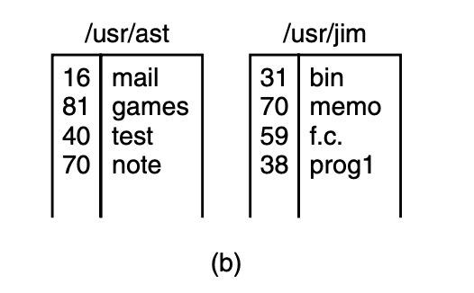

Operating Systerms Design and Implementation Notes
By Jiawei Wang
7. System Calls (3)

System Calls for Directory Management
mkdir, rmdir – make, remove a dir
int mkdir
(const char pathname(pointer), mode_t mode);
mkdir() attempts to create a directory named
pathname.
int rmdir
(const char pathname(pointer));
rmdir() deletes a directory, which must be
empty.
link – make a new name for a file
int link (const
char oldpath(pointer), const char newpath(pointer));
link() creates a new hard link to an existing file.
The newly created directory will be owned by the effective user ID of
the process.
Understanding how link works will probably make it clearer
what it does. Let’s see an exmple:
consider the
situation of fig.(a). here are two users, ast and jim, each having their
own directories with some files. if ast now executes a program
containing the system call:
link("/usr/jim/memo", ""/usr/ast/note");the file memo in jim’s directory is now entered into ast’s
directory under the name note. thereafter, /usr/jim/memo
and /usr/ast/note refer to the same file.
in the previous
note. i mentioned that there are 3 tables in unix-like file
system:
the fd table, the file table and the inode
table.
every file in unix has a unique number, its i-number, that identifies it. this i-number is an index into a table of i-nodes, one per file, telling who owns the file, where its disk blocks are, and so on. > a directory is simply a file containing a set of (i-number, ascii name) pairs. in the first versions of unix, each directory entry was 16 bytes—2 bytes for the i-number and 14 bytes for the name. a more complicated structure is needed to support long file names, but conceptually a directory is still a set of (i-number, ascii name) pairs.
in this example. after the link() system call,
it will be like fig.(b):

in fig.(b), two entries have the same i-number (70) and thus
refer to the same file.
if either one is later removed, using the
unlink system call, the other one remains. if both are removed, unix
sees that no entries to the file exist (a field in the i-node keeps
track of the number of directory entries pointing to the file), so the
file is removed from the disk.
mount – mount filesystem
#include <sys/mount.h>
int mount(const
char source(pointer), const char target(pointer),
const char
filesystemtype(pointer), unsigned long mountflags
const void
data(pointer));
the mount system call allows two file systems to be merged
into one. A common situation is to have the root file system con-
taining the binary (executable) versions of the common commands and
other heavily used files, on a hard disk. The user can then insert a
CD-ROM with files to be read into the CD-ROM drive.
By executing the mount system call, the CD-ROM file system
can be attached to the root file system, as shown in Fig. 1-15. A
typical statement in C to perform the mount is
mount(′′/dev/cdrom0′′, ′′/mnt′′, 0);Where the first parameter is the name of a block special file
for CD-ROM drive 0, the second parameter is the place in the tree where
it is to be mounted, and the third one tells whether the file system is
to be mounted read-write or read-only.
After the mount call, a file on CD-ROM drive 0 can be accessed by just using its path from the root directory or the working directory, without regard to which drive it is on. In fact, second, third, and fourth drives can also be mounted
sync – commit filesystem caches to disk
#include <unistd.h>
void sync
(void);
sync() causes all pending
modifications to filesystem metadata and cached file data to be written
to the underlying filesystems.
MINIX 3 maintains a block cache cache of recently used blocks in main memory to avoid having to read them from the disk if they are used again quickly. If a block in the cache is modified (by a write on a file) and the system crashes before the modified block is written out to disk, the file system will be damaged. To limit the potential damage, it is important to flush the cache periodically, so that the amount of data lost by a crash will be small.
The system call sync tells MINIX 3 to write out all the cache
blocks that have been modified since being read in. When MINIX 3 is
started up, a program called update is started as a back- ground process
to do a sync every 30 seconds, to keep flushing the cache.
chdir – change working directory
#include <unistd.h>
int chdir
(const char path(pointer));
chdir() changes the
current working directory of the calling process to the directory
specified in path.
After the call:
chdir("/usr/ast/test");an open on the file xyz will open
/usr/ast/test/xyz.
chroot – change root directory
#include <unistd.h>
int chroot
(const char path(pointer));
chroot()
changes the root directory of the calling process to that specified in
path. This directory will be used for pathnames beginning with /. The
root directory is inherited by all children of the calling
process.
System Calls for Protection
chmod – change permissions for a file
#include <sys/stat.h>
int chmod(const char pathname(pointer), mode_t
mode);
In MINIX 3 every file has an 11-bit mode
used for protection. Nine of these bits are the read-write-execute bits
for the owner, group, and others.
The chmod system
call makes it possible to change the mode of a file. For example, to
make a file read-only by everyone except the owner, one could
execute:
chmod("file", 0644);For more about protection mode: Please check this table from
man7.org:
getuid getgid – get the real user/group identity
uid_t getuid
(void);
uid_t getgid
(void);
getuid() returns the real user ID of the calling
process.
Samely, getgid() returns the real group ID of
the calling process.
In the previous notes, I
mentioned the meaning of User ID – In unix-like system: Every User of
the computer has its own user ID, which means different user can have
different permissions to do some specific things.
Group Identity
From this name. We can easily know that – Like User id, in
unix-like system. Each User also has its own Group ID. So what is the
usage of Gid?
Group identification number for the process. Valid group
numbers are given in /etc/group, and in the GID field of /etc/passwd
file. When a process is started, its GID is set to the GID of its parent
process.
From StackExchange:
Sometimes, though, it is necessary to have elevated privileges to run certain commands, but it is not desirable to give full administrative rights. For example, the passwd command needs access to the system’s shadow password file, so that it can update your password. Obviously, you don’t want to give every user root privileges, just so they can reset their password - that would undoubtedly lead to chaos! Instead, there needs to be another way to temporarily grant elevated privileges to users to perform certain tasks. That is what the SETUID and SETGID bits are for. It is a way to tell the kernel to temporarily raise the user’s privileges, for the duration of the marked command’s execution. A SETUID binary will be executed with the privileges of the owner of the executable file (usually root), and a SETGID binary will be executed with the group privileges of the group owner of the executable file. In the case of the passwd command, which belongs to root and is SETUID, it allows normal users to directly affect the contents of the password file, in a controlled and predictable manner, by executing with root privileges. There are numerous other SETUID commands on UNIX-like systems (chsh, screen, ping, su, etc), all of which require elevated privileges to operate correctly. There are also a few SETGID programs, where the kernel temporarily changes the GID of the process, to allow access to logfiles, etc. sendmail is such a utility.
geteuid getegid – get the effective uid/gid
uid_t geteuid
(void);
uid_t getegid
(void);
geteuid() returns the
effective user ID of the calling process.
Samely,
getegid() returns the effective group ID of the calling
process.
Effective ID
So what is the effective Id?
The other
two protection bits, are the SETGID (set-group-id) and SETUID
(set-user-id) bits, respectively. When any user executes a program with
the SETUID bit on, for the duration of that process the user’s effective
UID is changed to that of the file’s owner. This feature is heavily used
to allow users to execute programs that perform superuser only
functions, such as creating directories. Creating a directory uses
mknod, which is for the superuser only. By arranging for the mkdir
program to be owned by the superuser and have mode 04755, ordinary users
can be given the power to execute mknod but in a highly
restricted way.
umask – set file mode creation mask
mode_t umask
(mode_t mask);
umask(mask) sets an
internal bit mask within the system, which is used to mask off mode bits
when a file is created. After the call
umask(022);The mode supplied by creat and mknod will have the 022 bits masked off before being used. Thus the call:
creat("file", 0666)The resulting file permissions would be 0644 (rw-r–r–).
Instead of 0666 (rw-rw-rw-).
Since the bit mask is
inherited by child processes, if the shell does a umask just after
login, none of the user’s processes in that session will accidently
create files that other people can write on.
access – check user’s permissions for a file
#include <unistd.h>
**int access
(const char *pathname, int mode);**
The access() system call is born to solve a
problem:
We call know that when a program owned by
the root has the SETUID bit on, it can access any file, because its
effective UID is the superuser. Frequently it is useful for the program
to know if the person who called the program has permission to access a
given file. If the program just tries the access, it will always
succeed, and thus learn nothing.
What is needed is a way to see if the access is permitted for the real UID. The access system call provides a way to find out. The mode parameter is 4 to check for read access, 2 for write access, and 1 for execute access. Combinations of these values are also allowed. For example, with mode equal to 6, the call returns 0 if both read and write access are allowed for the real ID; otherwise −1 is returned. With mode equal to 0, a check is made to see if the file exists and the directories leading up to it can be searched.
System calls for Time Management
time – get time in seconds
#include <time.h>
time_t time
(time_t tloc(pinter));
time()returns the time as the number of seconds
since the Epoch.
1970-01-01 00:00:00 +0000 (UTC).
If tloc is non-NULL, the return value is also stored in the
memory pointed to by tloc.
stime – set time
#include <time.h>
int stime
(const time_t t(pointer));
stime() sets the system’s idea of the time and
date. The time, pointed to by t, is measured in seconds since the Epoch,
1970-01-01 00:00:00 +0000 (UTC). stime() may
be executed only by the superuser.
utime – change file last access and modification times
#include <sys/types.h>
#include <utime.h>int utime
(const char filename(pointer), const struct utimbuf
times(pointer));
the utime() system call changes the access and
modification times of the inode specified by filename to the actime and
modtime fields of times respectively.
if times is
null, then the access and modification times of the file are set to the
current time. application of this system call is fairly limited, but a
few programs need it, for example, touch, which sets the
file’s time to the current time.
times – get process times
#include <sys/times.h>clock_t times
(struct tms buf(pointer));
times() stores the current process times in the
struct tms that buf points to. the struct tms is as defined in
<sys/times.h>:
struct tms {
clock_t tms_utime; /* user time */
clock_t tms_stime; /* system time */
clock_t tms_cutime; /* user time of children */
clock_t tms_cstime; /* system time of children */
};From man7.org:
Thetms_utimefield contains the CPU time spent executing instructions of the calling process. Thetms_stimefield contains the CPU time spent executing inside the kernel while performing tasks on behalf of the calling process.
The
tms_cutimefield contains the sum of thetms_utimeandtms_cutimevalues for all waited-for terminated children. Thetms_cstimefield contains the sum of thetms_stimeandtms_cstimevalues for all waited-for terminated children.
Times for terminated children (and their descendants) are added in at the moment
wait(2)orwaitpid(2)returns their process ID. In particular, times of grandchildren that the children did not wait for are never seen.
All times reported are in clock ticks.